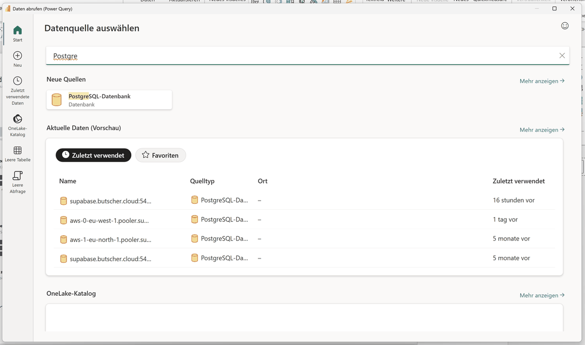
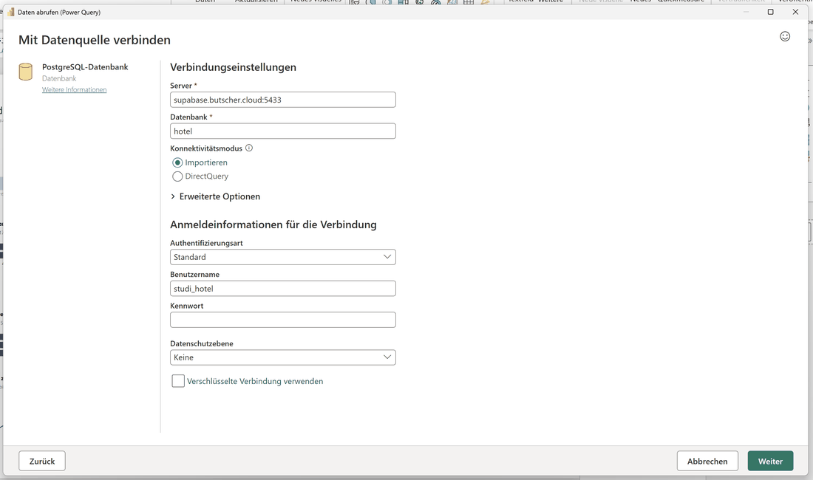
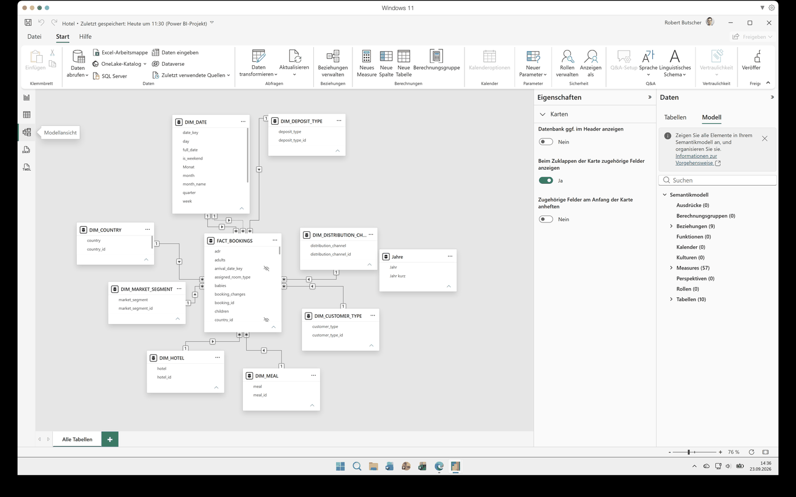
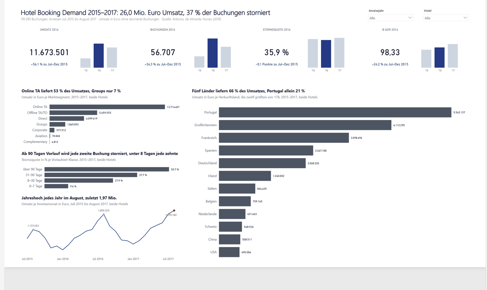
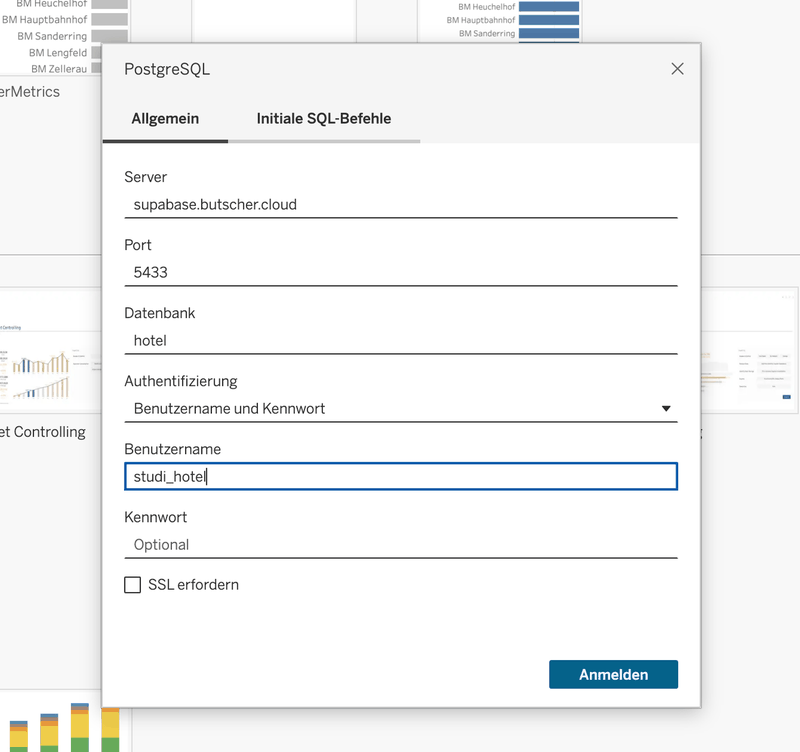
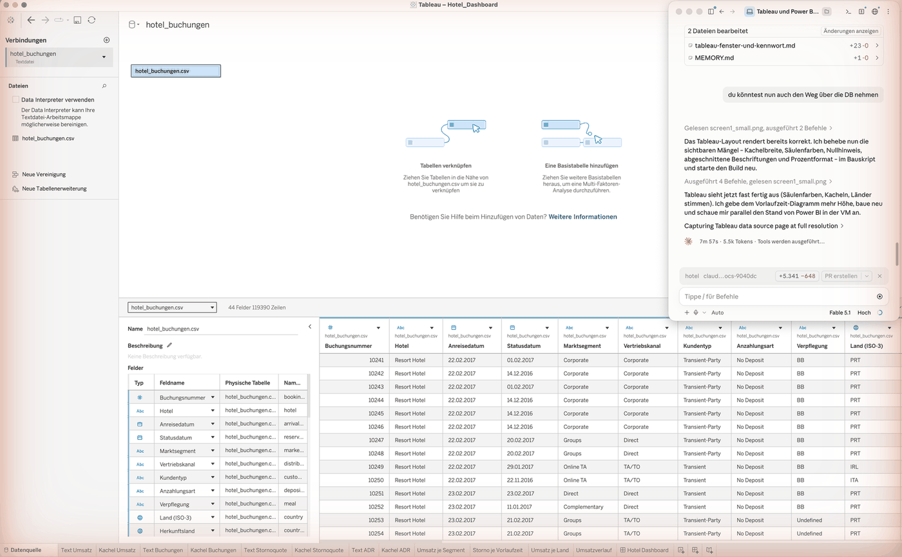
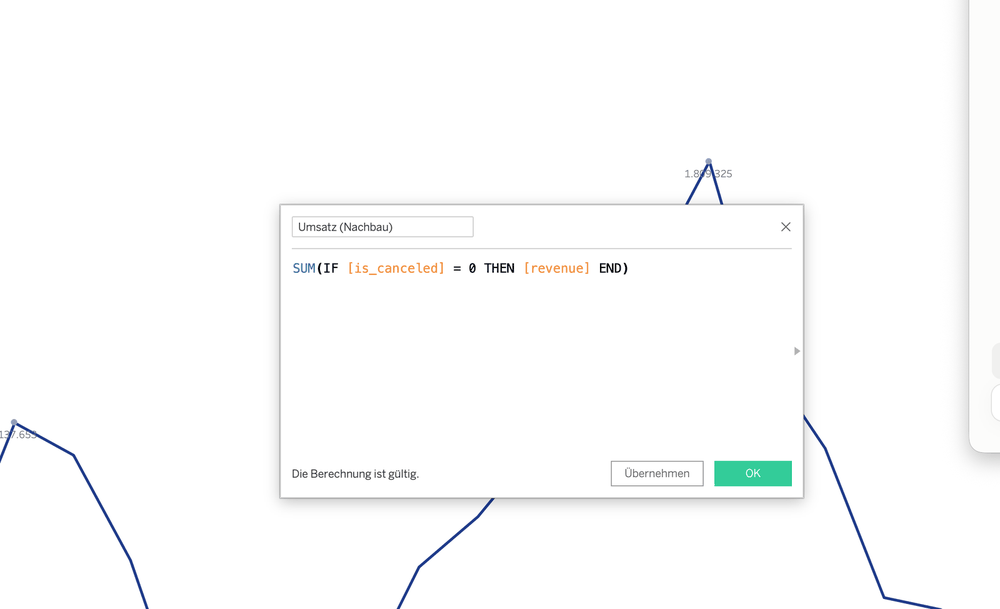
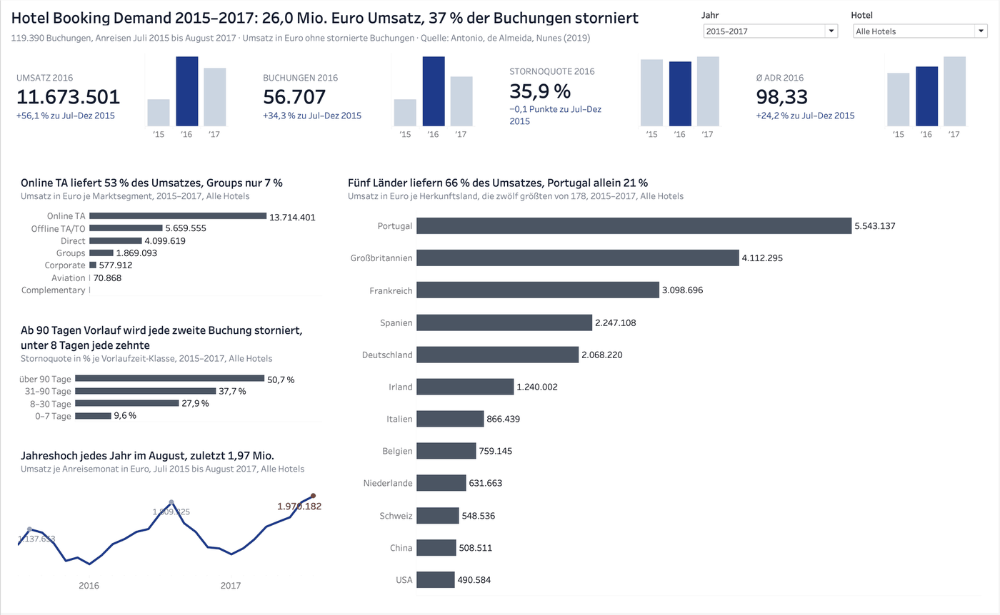

Aus dem Sternschema wird ein Management-Dashboard: vier Kennzahlkacheln mit Vorjahresvergleich,
drei Balkendiagramme und eine Monatslinie, jeder Titel eine Aussage mit Zahl, ein Filter für das Jahr und einer für
das Hotel. Dieses Lab baut dasselbe Dashboard zweimal – in Power BI Desktop und in Tableau Desktop – und zeigt jeden Handgriff an echten Screenshots. Die Kennzahlen heißen wie in Lab 06, die Gestaltungsregeln gelten für beide
Werkzeuge, und am Ende steht das Dashboard im Netz.
Was ein Dashboard leistet – und was die beiden Werkzeuge sind
Ein Dashboard beantwortet Fragen, es zeigt nicht Daten. Die Hotelleitung will in fünf Sekunden wissen, wie sich
Umsatz, Buchungen, Stornoquote und Zimmerpreis entwickeln, und in einer Minute, woran es liegt: welche Segmente,
welche Vorlaufzeiten, welche Herkunftsländer. Alles Weitere gehört auf Detailseiten. Daraus folgt die Anordnung:
oben die Spitzenkennzahlen als Kacheln, links die Treiber als sortierte Balken und der Zeitverlauf, rechts das eine
Diagramm mit vielen Kategorien in voller Höhe, oben rechts die Filter.
Visual auf einer Berichtsseite, Felder in den Field Wells
Arbeitsblatt, Felder auf den Shelves Columns, Rows, Marks
Alles auf einer Fläche
Berichtsseite (hier 1920 × 1080)
Dashboard aus Arbeitsblättern (hier 1400 × 860)
Filter für Betrachter
Slicer (Dropdown)
Parameter mit berechnetem Filterfeld
Weitergeben
PBIX (mit Daten) oder PBIP (Textdateien)
TWBX (mit Extrakt) oder TWB (nur Verweis)
Veröffentlichen
Power-BI-Dienst, Konto im Mandanten nötig
Tableau Public (offen) oder Tableau Cloud (Konto nötig)
Hinweis. Bei den in dieser Lernumgebung gezeigten Tools handelt es sich um eine Auswahl –
diese ist weder als Empfehlung noch als Werbung zu verstehen. Power BI Desktop ist kostenfrei; Tableau Desktop
braucht eine Lizenz, Studierende erhalten sie über das Academic-Programm, Tableau Public ist kostenfrei.
Alternativen auf derselben Ebene: Apache Superset und Metabase (Open Source). Angaben Stand 09/2026.
Konzept und Botschaften – vor dem ersten Klick
Bevor ein Visual entsteht, steht das Konzeptblatt: eine Seite, mit dem Auftraggeber abgestimmt. Es legt fest,
wer schaut, welche Frage das Dashboard beantwortet, welche Kennzahlen oben stehen, womit verglichen wird und was
bewusst fehlt. Für die Hotelbuchungen sieht es so aus:
Adressaten: Hotelleitung, monatlich
Leitfrage: Wie entwickeln sich Umsatz, Buchungen, Stornoquote und Zimmerpreis,
und welche Segmente, Vorlaufzeiten und Herkunftsländer treiben sie?
Spitzenkennzahlen: Umsatz (Euro, nur nicht stornierte Buchungen) · Anzahl Buchungen
· Stornoquote % · Ø ADR (Euro je Nacht) – Namen wie in Lab 06
Treiber: Umsatz je Marktsegment · Stornoquote je Vorlaufzeit-Klasse
· Umsatz je Herkunftsland (zwölf größte von 178) · Umsatz je Anreisemonat
Vergleiche: Vorjahr über die Monate, die in beiden Jahren vorliegen; Anteile; Verlauf
Bezugsjahr: 2016, das einzige vollständige Jahr; der Filter darf es umstellen
Filter: Anreisejahr (Alle, 2015, 2016, 2017) und Hotel (Alle, City, Resort)
Ausschlüsse: Auslastung und RevPAR (keine Kapazität im Datensatz); Karte (Länder als Balken);
gebuchter Umsatz vor Storno nur auf den Detailseiten
Teiljahre: 2015 nur Juli–Dezember, 2017 nur Januar–August
Erst rechnen, dann formulieren
Jeder Diagrammtitel ist eine Aussage mit Zahl, und jede Zahl im Titel wird vorher aus den Rohdaten gerechnet –
in SQL wie in Lab 06 oder mit dem Skript tools/sollwerte_dashboard.py im Repo. Ein Titel, der nicht
stimmt, ist schlimmer als keiner. Für dieses Dashboard ergeben die Daten:
Element
Aussage im Titel
Rechenweg
Seitentitel
Hotel Booking Demand 2015–2017: 26,0 Mio. Euro Umsatz, 37 % der Buchungen storniert
„+56,1 % zu Jul–Dez 2015“: Vergleich nur über die Monate, die 2015 und 2016 gemeinsam haben
Die Gestaltungsregeln, die in beiden Werkzeugen gelten
Eine Akzentfarbe (Marineblau #1E3A8A) für das Aktuelle, Grau (#4B5563) für Balken, Hellgrau (#CBD5E1) für Vorjahre, Rot (#B23B1E) nur für Negatives und den letzten Wert einer Zeitreihe. Keine Kategoriefarben, keine Legenden.
Werte an den Marken, Wertachsen ausgeblendet, Balken absteigend sortiert, kein Gitternetz, keine Rahmen, keine Schatten.
Jeder Titel eine Aussage mit Zahl, darunter grau: Größe, Einheit, Zeitraum („Umsatz in Euro je Marktsegment, 2015–2017, beide Hotels“). Der Zeitraum folgt dem Filter.
Kacheln: Bezeichnung mit Bezugsjahr, große Zahl, Veränderung zum Vorjahr (negativ rot), drei dicht stehende Minisäulen ’15 ’16 ’17, nur das Bezugsjahr in der Akzentfarbe.
Zeitreihe: dünne Linie, graue Punkte mit Wert am Jahreshoch, letzter Wert rot und fett, keine Wertachse, Zeitachse endet beim letzten Monat.
Weißraum trennt, nicht Linien: Kachelband, linke Spalte und rechte Spalte stehen für sich.
Teiljahre ehrlich vergleichen. Der Datensatz beginnt im Juli 2015 und endet im August 2017.
„2016 gegenüber 2015“ als ganze Jahre wäre ein Vergleich von zwölf mit sechs Monaten. Die Kacheln vergleichen
deshalb nur die Monate, die in beiden Jahren vorliegen, und sagen das im Text: „+56,1 % zu Jul–Dez 2015“. Für 2017
heißt es „zu Jan–Aug 2016“, für 2015 „kein Vorjahr im Datensatz“.
Schritt für Schritt: Power BI
Power BI Desktop besteht aus drei Teilen, die man auseinanderhalten sollte: Power Query holt und formt
die Daten, das Modell hält Tabellen, Beziehungen und Measures, der Bericht zeigt Visuals auf
Seiten. Die Referenzlösung liegt im Starterpaket unten und im Repo unter powerbi/: Hotel.pbix
mit Daten zum Öffnen per Doppelklick und Hotel.pbip als Projekt aus Textdateien, in denen jedes Measure
und jedes Visual nachzulesen ist.
Starterpaket: Bericht, Arbeitsmappe und veröffentlichte Fassungen
Hotel.pbix öffnet per Doppelklick in Power BI Desktop und enthält die Daten vom 23.09.2026;
Hotel_pbip.zip ist dieselbe Lösung als Projekt aus Textdateien – entpacken, Hotel.pbip
öffnen, einmal Aktualisieren. Hotel_Dashboard.twbx ist die Tableau-Arbeitsmappe mit
Extrakt, 50 berechneten Feldern, zwölf Arbeitsblättern und dem Dashboard; sie läuft in Tableau Desktop wie in
Tableau Public ohne Datenbankverbindung. Zum Nachbauen erst selbst rechnen, dann vergleichen.
Die Datenbank anbindenDieselben sechs Angaben wie in Lab 05, verteilt auf drei Dialoge. Eine Entscheidung kommt dazu:
Import kopiert alle Zeilen in die PBIX – schnell, unabhängig von der Datenbank, aber eine Momentaufnahme vom Ladezeitpunkt; DirectQuery schickt jede Interaktion als SQL an die Datenbank. Das
Projekt nimmt Import: 119.390 Zeilen sind klein, und die Daten ändern sich nicht.

Start → Daten abrufen → Weitere… öffnet „Datenquelle auswählen“. Wer „Postgre“ ins Suchfeld tippt,
bekommt den Konnektor PostgreSQL-Datenbank; darunter listet Power BI zuletzt verwendete Verbindungen.

„Mit Datenquelle verbinden“: Server und Port mit Doppelpunkt in einem Feld, Datenbank hotel, Modus
Importieren; unten die Anmeldeinformationen mit Authentifizierungsart Standard, Benutzername studi_hotel und
dem Kennwort. Das Häkchen „Verschlüsselte Verbindung verwenden“ ist entfernt, weil die Instanz kein
Zertifikat hat. Ältere Desktop-Versionen zeigen dieselben Angaben auf zwei kleinere Dialoge verteilt.Im Navigator dann das Schema hotel_bi aufklappen, alle neun Tabellen ankreuzen, Laden.
Die beiden Wahrheitswerte is_canceled und is_repeated_guest werden in Power Query in
0/1 gewandelt, damit sich ihr Mittelwert bilden lässt.
Das Modell prüfen: neun BeziehungenDie Modellansicht zeigt das Sternschema aus Lab 04 als Bild: FACT_BOOKINGS in der
Mitte, die Dimensionen außen, jede Beziehung als Linie mit 1 auf der Dimensions- und * auf der Faktenseite.
Power BI hat sie aus den Fremdschlüsseln erkannt; die zwei zu DIM_DATE prüft man trotzdem: über
arrival_date_key aktiv, über reservation_status_date_key inaktiv (gestrichelt), denn
zwischen zwei Tabellen darf nur ein Pfad aktiv sein – sonst wüsste ein Visual nicht, ob „August 2016“ die
Anreise oder das Stornodatum meint.

Modellansicht: neun Beziehungen 1:n von den Dimensionen zur Faktentabelle, die gestrichelte Linie
ist die inaktive zweite Rolle der Datumsdimension. Rechts steht die Tabelle Jahre ohne Beziehung – sie
trägt später die Achse der Minisäulen (Schritt 4).
Die Grundkennzahlen als MeasuresEin Measure rechnet im Kontext des Visuals: dasselbe Measure liefert in der Kachel den
Gesamtwert, im Balken den Wert je Segment, in der Linie den Wert je Monat. Geschrieben wird es in DAX über
Tabellentools → Neues Measure; die Formel erscheint in der Formelleiste. Vier Bausteine reichen für den
ganzen Katalog: CALCULATE filtert, DIVIDE teilt sicher, eckige Klammern verweisen auf
andere Measures, USERELATIONSHIP schaltet die zweite Datumsrolle ein.
Measure auswählen: Sobald ein Measure im Datenbereich markiert ist, zeigt die Formelleiste seine
DAX-Formel und das Menüband die Measuretools mit Name, Basistabelle und Zahlenformat. Hier das Measure
Umsatz Bezugsjahr aus Schritt 4.
Kacheln mit Bezugsjahr und VorjahresvergleichDie Kacheln folgen dem Jahresfilter: Bezugsjahr ist das gewählte Jahr, ohne Auswahl 2016. Je
Kennzahl braucht es den Wert des Bezugsjahrs, den Vergleich über die gemeinsamen Monate, den Text der
Veränderung, eine Farbe und die zwei Reihen der Minisäulen. Das Muster für den Umsatz gilt wortgleich für
Buchungen, Stornoquote (in Prozentpunkten) und ADR. Die Minisäulen bekommen ihre Achse aus einer eigenen
Tabelle Jahre ohne Beziehung, damit alle drei Jahre stehen bleiben, auch wenn der Slicer auf
einem Jahr steht.
Bezugsjahr = IF(ISFILTERED(DIM_DATE[year]), MAX(DIM_DATE[year]), 2016)
Umsatz Bezugsjahr =
VAR j = [Bezugsjahr]
RETURN CALCULATE([Umsatz], REMOVEFILTERS(DIM_DATE), DIM_DATE[year] = j)
-- gemeinsame Monate von Bezugsjahr und Vorjahr (Teiljahre 2015 und 2017)
Umsatz Vergleich Bezugsjahr =
VAR j = [Bezugsjahr]
VAR mb = CALCULATETABLE(SUMMARIZE(FACT_BOOKINGS, DIM_DATE[month]), REMOVEFILTERS(DIM_DATE), DIM_DATE[year] = j)
VAR mv = CALCULATETABLE(SUMMARIZE(FACT_BOOKINGS, DIM_DATE[month]), REMOVEFILTERS(DIM_DATE), DIM_DATE[year] = j - 1)
VAR m = INTERSECT(mb, mv)
RETURN CALCULATE([Umsatz], REMOVEFILTERS(DIM_DATE), DIM_DATE[year] = j, m)
-- Umsatz Vergleich Vorjahr: genauso mit DIM_DATE[year] = j - 1
Umsatz Veränderung =
VAR a = [Umsatz Vergleich Bezugsjahr]
VAR v = [Umsatz Vergleich Vorjahr]
VAR d = DIVIDE(a - v, v)
RETURN IF(ISBLANK(v), "kein Vorjahr im Datensatz",
IF(d >= 0, "+", "−") & FORMAT(ABS(d) * 100, "0.0") & " % zu " & [Vergleichszeitraum])
Umsatz Farbe = IF(ISBLANK([Umsatz Vergleich Vorjahr]) || [Umsatz Vergleich Bezugsjahr] >= [Umsatz Vergleich Vorjahr], "#1E3A8A", "#B23B1E")
Umsatz Titel = "UMSATZ " & FORMAT([Bezugsjahr], "0")
-- Modellierung → Neue Tabelle (ohne Beziehung, Achse der Minisäulen)
Jahre = ADDCOLUMNS(SELECTCOLUMNS(SUMMARIZE(FACT_BOOKINGS, DIM_DATE[year]), "Jahr", DIM_DATE[year]),
"Jahr kurz", "'" & RIGHT(FORMAT([Jahr], "0"), 2))
Umsatz Aktuell = VAR j = [Bezugsjahr] VAR y = MAX(Jahre[Jahr]) RETURN IF(y = j, CALCULATE([Umsatz], REMOVEFILTERS(DIM_DATE), DIM_DATE[year] = y))
Umsatz Vorjahre = VAR j = [Bezugsjahr] VAR y = MAX(Jahre[Jahr]) RETURN IF(y <> j, CALCULATE([Umsatz], REMOVEFILTERS(DIM_DATE), DIM_DATE[year] = y))
Kontrolle ohne Auswahl im Slicer: Umsatz Bezugsjahr 11.673.501, Umsatz Veränderung „+56,1 % zu Jul–Dez 2015“.
Mit Anreisejahr 2017: 9.811.200 und „+23,2 % zu Jan–Aug 2016“. Mit 2015: „kein Vorjahr im Datensatz“.
Jede Kachel besteht aus vier Visuals: drei Karten (Titel, Wert des Bezugsjahrs, Veränderung – Schriftfarbe
über fx an das Measure Umsatz Farbe gebunden) und einem gestapelten Säulendiagramm mit
Jahre[Jahr kurz] auf der X-Achse und den Reihen Umsatz Vorjahre (hellgrau) und
Umsatz Aktuell (Akzentfarbe), Achsen und Legende aus.
Balken, Linie und die Botschaft im TitelDrei gruppierte Balkendiagramme mit einer Dimension auf der Y-Achse und einem Measure auf der X-Achse:
DIM_MARKET_SEGMENT[market_segment] mit Umsatz, FACT_BOOKINGS[Lead-Time-Bucket] mit
Stornoquote %, DIM_COUNTRY[Land] mit Umsatz und einem Top-N-Filter auf zwölf Länder. Je Visual:
Datenbeschriftungen ein, Wertachse aus, Farbe der Balken auf Grau, Sortierung absteigend, Titel als Aussage,
Untertitel an ein Measure gebunden, das Einheit, Zeitraum und Hotelauswahl ausgibt. Die Monatslinie trägt
DIM_DATE[Monat] auf der X-Achse und drei Measures: Umsatz als Linie, dazu
Saisonpunkte und Letzter Monat als Reihen mit Linienbreite 0 und Markierung.
Letzter Monat Datum = MAXX(CALCULATETABLE(SUMMARIZE(FACT_BOOKINGS, DIM_DATE[Monat]), ALLSELECTED()), DIM_DATE[Monat])
Letzter Monat = IF(MAX(DIM_DATE[Monat]) = [Letzter Monat Datum], [Umsatz])
Saisonpunkte = -- grauer Punkt am Jahreshoch jedes Jahres
VAR y = MAX(DIM_DATE[year])
VAR cur = [Umsatz]
VAR mx = MAXX(CALCULATETABLE(SUMMARIZE(FACT_BOOKINGS, DIM_DATE[Monat]), ALLSELECTED(), DIM_DATE[year] = y), [Umsatz])
RETURN IF(cur = mx && MAX(DIM_DATE[Monat]) < [Letzter Monat Datum], cur)
Zeitraum = VAR t = CALCULATETABLE(SUMMARIZE(FACT_BOOKINGS, DIM_DATE[year]), ALLSELECTED())
VAR mn = MINX(t, DIM_DATE[year]) VAR mx = MAXX(t, DIM_DATE[year])
RETURN IF(mn = mx, FORMAT(mn, "0"), FORMAT(mn, "0") & "–" & FORMAT(mx, "0"))
Hotelauswahl = IF(HASONEVALUE(DIM_HOTEL[hotel]), MAX(DIM_HOTEL[hotel]), "beide Hotels")
Untertitel Segment = "Umsatz in Euro je Marktsegment, " & [Zeitraum] & ", " & [Hotelauswahl]
-- DIM_COUNTRY: Spaltentools → Neue Spalte, deutsche Ländernamen statt ISO-3-Codes
Land = SWITCH(DIM_COUNTRY[country], "PRT", "Portugal", "GBR", "Großbritannien", "FRA", "Frankreich", …, DIM_COUNTRY[country])
Zwei Slicer oben rechts, beide im Stil Dropdown: DIM_DATE[year] (auf 2015–2017
eingeschränkt) und DIM_HOTEL[hotel]. Die Designdatei THWS_klar.json aus dem Projekt
setzt Schrift, Farben, Achsen und Beschriftungen für alle Visuals auf einmal: Ansicht → Designs → Nach
Designs suchen.

Die Seite „Übersicht“ in Power BI Desktop: Seitentitel als Aussage, oben rechts die Dropdowns
für Anreisejahr und Hotel, vier Kacheln mit Wert des Bezugsjahrs 2016, Veränderung zu Juli–Dezember 2015
und Minisäulen je Jahr; links Balken je Marktsegment und je Vorlaufzeit-Klasse sowie der Umsatz je Anreisemonat
mit grauen Punkten am Jahreshoch und rotem letztem Wert; rechts die zwölf umsatzstärksten Herkunftsländer.
Kein Gitternetz, keine Legende, eine Akzentfarbe.
Speichern und weitergebenDatei → Speichern unter als .pbix enthält Modell, Bericht und die importierten Daten;
wer die Datei öffnet, braucht keine Datenbank. Als Power-BI-Projekt (.pbip) liegt
dieselbe Lösung als Ordner aus Textdateien vor: Measures in FACT_BOOKINGS.tmdl, jedes Visual als
visual.json. Das Projekt enthält keine Daten – nach dem Öffnen einmal Aktualisieren.
Schritt für Schritt: Tableau
Dasselbe Dashboard in Tableau Desktop. Statt Measures gibt es berechnete Felder, statt Slicer Parameter, statt
einer Berichtsseite ein Dashboard aus Arbeitsblättern. Die Arbeitsmappe Hotel_Dashboard.twbx liegt im
Starterpaket oben, gepackt mit den Daten – sie läuft ohne Datenbankverbindung in Tableau Desktop wie in Tableau Public.
Mit der Datenbank verbindenStartseite → Verbinden → Mit einem Server → PostgreSQL. Server supabase.butscher.cloud,
Port 5433, Datenbank hotel, Authentifizierung Benutzername und Kennwort
(studi_hotel / thws), SSL erfordern nicht ankreuzen. Fehlt der Treiber, zeigt
Tableau einen Link zum Herunterladen; danach den Dialog erneut öffnen.

Verbinden → PostgreSQL: Server, Port, Datenbank und Benutzername ausfüllen, das Kennwort kommt in
das Feld darunter. Tableau fragt beim nächsten Öffnen der Arbeitsmappe erneut danach, solange kein Extrakt
existiert.
Die Datenquelle: eine flache TabelleAuf der Datenquellenseite links das Schema hotel_bi wählen. Zwei Wege führen zum Ziel: die
neun Tabellen einzeln in den Arbeitsbereich ziehen und über ihre Schlüssel verknüpfen (Beziehungen, wie das
Modell in Power BI), oder unten links Neues benutzerdefiniertes SQL mit der Verknüpfung aus Lab 06 –
eine Zeile je Buchung mit Hotel, Anreisedatum, Segment, Kanal, Land, Storno, Vorlaufzeit, ADR und Umsatz. Für
Einsteiger ist der zweite Weg der sicherere: ein Feld je Spalte, keine Frage, welche Tabelle gerade zählt.
Danach Daten → Extrakt erstellen, damit die Arbeitsmappe ohne Anmeldung läuft und Tableau Public sie
annimmt.
SELECT f.booking_id, h.hotel, d.full_date AS arrival_date,
m.market_segment, c.distribution_channel, k.customer_type, z.deposit_type,
l.country, f.is_canceled::int AS is_canceled, f.lead_time, f.total_nights, f.adr, f.revenue
FROM fact_bookings f
JOIN dim_hotel h USING (hotel_id)
JOIN dim_date d ON d.date_key = f.arrival_date_key
JOIN dim_market_segment m USING (market_segment_id)
JOIN dim_distribution_channel c USING (distribution_channel_id)
JOIN dim_customer_type k USING (customer_type_id)
JOIN dim_deposit_type z USING (deposit_type_id)
JOIN dim_country l USING (country_id)
Kontrolle: 119.390 Zeilen. Das Anreisedatum trägt das Kalendersymbol (Datum), is_canceled die Raute (Zahl).
Dieselbe Tabelle erzeugt tools/flache_buchungstabelle.py aus den CSV-Dateien des Repos – so ist die
Arbeitsmappe im Starterpaket entstanden, mit deutschen Ländernamen in der Spalte country_name.

Datenquellenseite der Arbeitsmappe aus dem Starterpaket: oben die Tabelle hotel_buchungen im
Arbeitsbereich, unten links die Felder mit deutschem Namen und Typ, rechts die Vorschau der ersten Zeilen.
Rechts oben schaltet man die Verbindung von Live auf Extrakt.
Berechnete Felder anlegenAnalyse → Berechnetes Feld erstellen. Die Grundkennzahlen entsprechen den DAX-Measures; was in DAX
CALCULATE mit Filter ist, ist in Tableau ein IF innerhalb der Summe. Die Namen bleiben
die aus Lab 06.
// Anzahl Buchungen
COUNT([booking_id])
// Umsatz – nur nicht stornierte Buchungen (DAX: CALCULATE(SUM(...), is_canceled = 0))
SUM(IF [is_canceled] = 0 THEN [revenue] END)
// Gebuchter Umsatz
SUM([revenue])
// Stornoquote % (Zahlenformat Prozent, eine Nachkommastelle)
AVG([is_canceled])
// Ø ADR
AVG([adr])
// Vorlaufzeit-Klasse
IF [lead_time] <= 7 THEN "0–7 Tage" ELSEIF [lead_time] <= 30 THEN "8–30 Tage"
ELSEIF [lead_time] <= 90 THEN "31–90 Tage" ELSE "über 90 Tage" END
Sollwerte ohne Filter: 119.390 · 25.996.260 · 42.723.498 · 37,0 % · 101,83. Weicht der Umsatz ab, fehlt das IF – dann wurden stornierte Buchungen mitgezählt.

Analyse → Berechnetes Feld erstellen: Name und Formel, hier der stornobereinigte Umsatz. Tableau
meldet unten, ob die Berechnung gültig ist; die Feldliste links zeigt danach das neue Feld mit dem Gleichheitszeichen.
Filter als Parameter, Kacheln mit BezugsjahrEin Parameter Jahr (Liste: 2015–2017, 2015, 2016, 2017) und ein Parameter Hotel
(Alle Hotels, City Hotel, Resort Hotel). Zwei berechnete Felder machen daraus Filter: Jahr gewählt
liegt auf den vier Diagrammblättern, Hotel gewählt zusätzlich auf den Kachelblättern – die Kacheln
sollen dem Hotel folgen, aber nicht dem Jahr, denn sie rechnen selbst mit dem Bezugsjahr. Die Minisäulen sind
ein Balkenblatt je Kennzahl mit Jahr kurz auf Columns und der Farbe aus Aktuelles Jahr;
der Kacheltext ist ein Textblatt, dessen Beschriftung aus vier Feldern besteht (Titel, Wert, Veränderung
positiv in Blau, Veränderung negativ in Rot).
// Jahr gewählt (Filter auf den Diagrammblättern: nur Wahr)
([Jahr] = "2015–2017" OR STR(YEAR([arrival_date])) = [Jahr])
AND ([Hotel] = "Alle Hotels" OR [hotel] = [Hotel])
// Bezugsjahr – jüngstes vollständiges Jahr, wenn alle Jahre gewählt sind
IF [Jahr] = "2015–2017" THEN 2016 ELSE INT([Jahr]) END
// Jahr kurz · Aktuelles Jahr (Farbe der Minisäulen)
"'" + RIGHT(STR(YEAR([arrival_date])), 2)
IF YEAR([arrival_date]) = [Bezugsjahr] THEN "aktuell" ELSE "früher" END
// Umsatz Bezugsjahr
SUM(IF YEAR([arrival_date]) = [Bezugsjahr] THEN (IF [is_canceled] = 0 THEN [revenue] END) END)
// Vergleichsmonate: ein Monat zählt, wenn er im Bezugsjahr UND im Vorjahr vorliegt.
// { FIXED MONTH([arrival_date]) : MIN(YEAR([arrival_date])) } ist das erste Jahr, das den Monat hat.
// Umsatz Bezugsjahr Vergleichsmonate
SUM(IF YEAR([arrival_date]) = [Bezugsjahr]
AND [Bezugsjahr] - 1 >= { FIXED MONTH([arrival_date]) : MIN(YEAR([arrival_date])) }
THEN (IF [is_canceled] = 0 THEN [revenue] END) END)
// Umsatz Vorjahr Vergleichsmonate
SUM(IF YEAR([arrival_date]) = [Bezugsjahr] - 1
AND [Bezugsjahr] <= { FIXED MONTH([arrival_date]) : MAX(YEAR([arrival_date])) }
THEN (IF [is_canceled] = 0 THEN [revenue] END) END)
// Umsatz Veränderung
IF ISNULL([Umsatz Vorjahr Vergleichsmonate]) THEN "kein Vorjahr im Datensatz"
ELSE (IF [Umsatz Bezugsjahr Vergleichsmonate] >= [Umsatz Vorjahr Vergleichsmonate] THEN "+" ELSE "−" END)
+ REPLACE(STR(ROUND(ABS([Umsatz Bezugsjahr Vergleichsmonate] / [Umsatz Vorjahr Vergleichsmonate] - 1) * 100, 1)), ".", ",")
+ " % zu " + [Vergleichszeitraum] END
Kontrolle bei Jahr = 2015–2017: Umsatz Bezugsjahr 11.673.501, Veränderung „+56,1 % zu Jul–Dez 2015“. Alle 50 Felder stehen in der Arbeitsmappe; das Bauskript tableau/bau_hotel_dashboard.py im Repo erzeugt sie.
Ein Blatt je DiagrammUmsatz je Segment: market_segment auf Rows, Umsatz auf Columns, absteigend
sortiert. Storno je Vorlaufzeit: Vorlaufzeit-Klasse auf Rows, Stornoquote %
auf Columns. Umsatz je Land: country_name auf Rows, Umsatz auf Columns,
Filter Top 12 nach Umsatz. Umsatzverlauf: arrival_date als Monat (stetig) auf Columns,
Umsatz auf Rows; dazu Saisonpunkte als zweite Kennzahl mit Rechtsklick →
Doppelachse, Markierungstyp Kreis, Farbe aus Punktart, Beschriftung ein. Je Blatt: Markierungsfarbe
Grau, Beschriftungen ein, Wertachse ausblenden (Rechtsklick auf die Achse → Kopfzeile anzeigen), Rasterlinien
Keine, Titel als Aussage mit grauer zweiter Zeile, in der über Einfügen die Parameter Jahr und Hotel
stehen.
// Letzter Monat (rot beschriftet) – letzter Monat des gewählten Zeitraums
IF DATETRUNC("month", [arrival_date])
= { MAX(IF [Jahr] = "2015–2017" OR STR(YEAR([arrival_date])) = [Jahr] THEN DATETRUNC("month", [arrival_date]) END) }
THEN (IF [is_canceled] = 0 THEN [revenue] END) END
// Saisonpunkte – Monatsumsatz, wenn er das Jahreshoch ist (LOD-Ausdruck), plus letzter Monat
IF { FIXED YEAR([arrival_date]), DATETRUNC("month", [arrival_date]) : SUM(IF [is_canceled] = 0 THEN [revenue] END) }
= { FIXED YEAR([arrival_date]) : MAX({ FIXED YEAR([arrival_date]), DATETRUNC("month", [arrival_date]) : SUM(IF [is_canceled] = 0 THEN [revenue] END) }) }
OR DATETRUNC("month", [arrival_date]) = [Letzter Monat Datum]
THEN (IF [is_canceled] = 0 THEN [revenue] END) END
LOD-Ausdrücke ignorieren Dimensionsfilter.{ FIXED … } rechnet über alle
Zeilen, auch wenn das Blatt auf ein Hotel gefiltert ist. Deshalb steht die Hotelbedingung in der
Arbeitsmappe direkt im LOD-Ausdruck ([Hotel] = "Alle Hotels" OR [hotel] = [Hotel]); die
Alternative wäre, den Hotelfilter zum Kontextfilter zu machen.
Das Dashboard zusammensetzenDashboard → Neues Dashboard, Größe fest 1400 × 860 Pixel. Die Blätter aus der linken Liste
ziehen: oben eine Zeile mit den vier Kacheln (je Textblatt und Balkenblatt nebeneinander, Titel ausblenden),
links Segment, Vorlaufzeit und Umsatzverlauf, rechts die Länder in voller Höhe. Die Parameter über das Menü
des Blatts einblenden (Parameter → Jahr, Hotel), als kompakte Liste oben rechts. Im
Layout-Bereich 16 Pixel äußere Füllung je Blatt, keine Rahmen. Der Dashboardtitel ist die Aussage der Seite,
darunter ein Textobjekt mit Umfang, Einheit und Quelle.

Das Tableau-Dashboard auf fester Fläche von 1400 × 860 Pixeln, gestaltet wie die Power-BI-Seite:
oben rechts die Dropdowns für Jahr und Hotel, Kacheln mit Bezugsjahr 2016, Vorjahresvergleich über die
gemeinsamen Monate und drei Minisäulen, links Segment, Vorlaufzeit und Monatslinie mit grauen Punkten am
Jahreshoch und rotem letztem Wert (August 2017), rechts die zwölf umsatzstärksten Länder. Werte statt Achsen,
keine Legende, eine Akzentfarbe.
Als verpackte Arbeitsmappe speichernDatei → Speichern unter → Verpackte Arbeitsmappe (.twbx). Die twbx enthält Arbeitsmappe und
Extrakt; wer sie öffnet, braucht weder Datenbank noch Kennwort. Eine .twb speichert nur den Verweis auf die
Verbindung und fragt beim Öffnen nach der Anmeldung.
Zwei Werkzeuge, ein Ergebnis
Wer eines der beiden Werkzeuge kann, kann das andere in einem Nachmittag: Die Begriffe unterscheiden sich, die
Denkweise nicht. Was in Power BI ein Measure ist, ist in Tableau ein berechnetes Feld; beides rechnet im Kontext
des Visuals. Der Jahresfilter ist dort ein Slicer, hier ein Parameter mit Filterfeld. Die Anordnung, die Farben
und die Titel sind identisch – das ist Absicht, denn die Regeln hängen nicht am Werkzeug.
Kachelblätter ohne den Jahresfilter, Farbe aus Aktuelles Jahr
Ländernamen
berechnete Spalte Land mit SWITCH
Spalte country_name in der flachen Tabelle
Veröffentlichen
Ein Dashboard ist erst fertig, wenn andere es sehen können. Die drei Wege unten sind mit dem Hotel-Dashboard
durchgespielt; sie unterscheiden sich darin, wer es sehen darf, was es kostet und wem die Daten gehören.
Power-BI-Dienst: veröffentlicht, aber nicht öffentlich
In Power BI Desktop Start → Veröffentlichen, Arbeitsbereich wählen. Desktop lädt Bericht und Modell in
den Dienst, danach öffnet der Bericht unter app.powerbi.com mit Slicern, Kacheln und allen Interaktionen. Sehen
können ihn nur Personen mit einem Konto im selben Mandanten (hier die THWS) und einer Power-BI-Lizenz. Der einzige
Weg zu einem anonymen Link ist Datei → Bericht einbetten → Im Web veröffentlichen, und den muss der
Administrator freischalten – an der THWS ist er gesperrt. Das ist Absicht: Ein öffentlicher
Einbettungscode gibt die Daten an jeden weiter, der den Link findet.
Power-BI-Dienst: Der Bericht aus Desktop läuft unverändert im Browser; die Werkzeugleiste bietet
Freigeben, Exportieren und Abonnieren für Nutzer des Mandanten.
Tableau Public: öffentlich, kostenlos, für alle sichtbar
Server → Tableau Public → In Tableau Public speichern unter. Tableau verlangt einen Extrakt (Schritt 2),
dann die Anmeldung mit dem kostenlosen Tableau-Public-Konto. Nach dem Hochladen öffnet die Arbeitsmappe im Browser
unter dem eigenen Profil; der Name der Visualisierung ist der Name der Arbeitsmappe. Jeder mit dem Link sieht das
Dashboard, kann filtern und die Arbeitsmappe samt Daten herunterladen. Für offene Daten wie diese ist das der
einfachste Weg, für Unternehmensdaten ausgeschlossen.
Tableau Public: ohne Anmeldung erreichbar; die Leiste unten bietet Teilen, Vollbild und Herunterladen
der Arbeitsmappe. Das Gebietsschema der Arbeitsmappe bestimmt Tausenderpunkt und Dezimalkomma.
Tableau Cloud: geschlossen, für die Organisation
Server → Anmelden mit dem Site-Namen als Adresse, dann Server → Arbeitsmappe veröffentlichen:
Projekt wählen, unter Blätter „Nur Dashboards“, Veröffentlichen. Wer den Link ohne Konto aufruft, landet auf der
Anmeldeseite; Betrachter brauchen die Rolle Viewer, Bearbeiten im Browser die Rolle Explorer. Dafür bleiben die
Daten unter Kontrolle, Berechtigungen gelten je Projekt, Extrakte lassen sich automatisch aktualisieren.
Tableau Cloud (Site tableau_demos, Projekt Standard) direkt nach dem Veröffentlichen: Die Arbeitsmappe
Hotel_Dashboard enthält nur die eine Ansicht, weil unter Blätter „Nur Dashboards“ gewählt war; links die
Navigation der Site, oben Bearbeiten und Freigeben. Sichtbar nur für angemeldete Nutzer der Site.
Drei Wege im Vergleich
Power-BI-Dienst: Konto im Mandanten plus Lizenz; öffentliche Links nur mit Erlaubnis des Administrators.
Tableau Public: kostenlos, anonym erreichbar, Daten für alle herunterladbar – nur für offene Daten.
Tableau Cloud: Konto und Rolle je Betrachter, Berechtigungen je Projekt – für Organisationen.
Stolpersteine
Titel als Etikett
„Umsatz nach Segment“ sagt nichts. Die Aussage mit Zahl sagt, was zu sehen ist: „Online TA liefert 53 % des
Umsatzes“. Die Zahl wird vorher gerechnet, nicht geschätzt – und gilt für den Zeitraum, den der Untertitel nennt.
Teiljahr als Vorjahr
2015 hat nur sechs Monate. Wer 2016 ganz gegen 2015 rechnet, meldet +159 % Umsatz – richtig ist +56 % über
Juli bis Dezember. Vergleiche nur über gemeinsame Monate, und den Zeitraum in den Text.
Σ von booking_id
Zieht man eine Zahlenspalte in ein Field Well (Power BI) oder auf ein Shelf (Tableau), summiert das Werkzeug sie. „Summe von booking_id“ ist eine Zahl mit
elf Stellen. Zählen heißt Anzahl Buchungen beziehungsweise COUNT([booking_id]).
Eine Farbe je Kategorie
Acht Segmente in acht Farben brauchen eine Legende und sagen nichts. Kategorien bleiben grau; Farbe kodiert
Bedeutung: das Bezugsjahr, das Negative, den letzten Wert.
Top 10 ohne Gesamtbezug
Zwölf Länder von 178 – das steht im Untertitel, und der Titel nennt den Anteil der fünf größten am Ganzen.
Ein Top-N-Balken ohne diesen Bezug lässt den Rest der Welt verschwinden.
Kacheln bleiben beim Jahresfilter starr
Eine Karte mit dem Gesamtumsatz zeigt bei Auswahl 2017 zwar 2017, aber ohne Vergleich. Das Muster
Bezugsjahr = gewähltes Jahr, Vorjahr = Bezugsjahr − 1 macht die Kacheln beweglich, die Minisäulen behalten
alle Jahre.
Monate alphabetisch
Der Monatsname sortiert sich als Text: April, August, Dezember. Power BI: Nach Spalte sortieren
(month_name nach month). Tableau: das Datumsfeld als Monat (stetig) verwenden.
Die Beziehung ist inaktiv
Ein Visual nach Stornodatum zeigt dieselben Werte wie nach Anreisedatum? Dann läuft es über die aktive
Beziehung. Nur das Measure mit USERELATIONSHIP nutzt die zweite.
Kein Extrakt, kein Public
Tableau Public nimmt nur Arbeitsmappen mit Extrakt an, und eine .twb ohne Extrakt fragt bei jedem Öffnen nach
dem Kennwort. Daten → Extrakt erstellen, dann als .twbx speichern.
Sandbox
Ein nachgebildeter Feldbereich mit den Feldern des Projekts und einer Stichprobe von 5.000 Buchungen, einmal mit den Field Wells von Power BI (X-Achse, Y-Achse, Legende), einmal mit den Shelves von Tableau (Columns, Rows, Color). Ziehen Sie Felder hinein; das Diagramm folgt aus der Belegung. Die Stichprobe liefert andere absolute Zahlen als das Dashboard, aber dieselben Muster – und die Σ-Falle
ist eingebaut.
Power BI: X-Achse, Y-Achse, Legende
Tableau: Columns, Rows, Color
Übungen
Sechs Übungen: zwei am nachgebildeten Feldbereich (Field Wells von Power BI, Shelves von Tableau), eine Zuordnung von Measures zu DAX, die Reihenfolge der
Anbindung, Verständnisfragen zu Import, Beziehungen und Kacheln sowie die Gestaltungsregeln an Beispielen.
Zusammenfassung
Erst das Konzeptblatt, dann die Sollwerte, dann das Visual: Jeder Titel ist eine Aussage mit einer Zahl, die aus den Rohdaten gerechnet wurde.
Oben vier Kacheln mit Bezugsjahr, Vorjahresvergleich über gemeinsame Monate und Minisäulen; links Treiber und Zeitverlauf; rechts das eine lange Diagramm; oben rechts die Filter.
Eine Akzentfarbe, graue Balken, Rot nur für Negatives und den letzten Wert; Werte an den Marken statt Achsen; keine Legende, kein Gitternetz.
Power BI: Import, neun Beziehungen, Measures in DAX, Slicer als Dropdown, Designdatei. Tableau: flache Tabelle mit Extrakt, berechnete Felder, Parameter als Filter, Dashboard auf fester Fläche.
Measure und berechnetes Feld sind dasselbe Prinzip: rechnen im Kontext des Visuals. LOD-Ausdrücke und REMOVEFILTERS heben diesen Kontext gezielt auf.
Veröffentlichen heißt entscheiden: Power-BI-Dienst für den Mandanten, Tableau Public für offene Daten, Tableau Cloud für die Organisation.